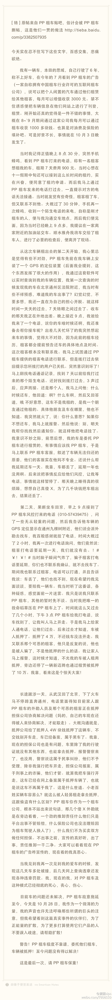

【白灼虾里的见识】我小时候生活在缺水的内陆省，所以水产海鲜什么的，从小吃得不多。妈妈喜欢做的就是鲫鱼和鲤鱼，是最容易获得的水产，而至于虾和螃蟹，做法向来是裹了面油炸，因为个头都太小了。 结婚后不久就用简陋的厨房做菜请客，为表示隆重，我还特意去超市买了… 网页链接
之前看到有人推荐PP租车，看来风险蛮大。我跟别人提这个模式时，对方说: 车被别人开走了，出了事故怎么算？要租也应该租房，房子跑不了。- 没想到车还有被抵押的风险。@黄猫sips:【转帖】在pp租车的悲惨遭遇 
【姣姣流水账: 十一岁】2014-09－03 明俊辅导姣姣功课，旁听的我又叫唤起来：“10句话里，你9句是批评和否定，如果你辅导的结果是孩子没有自信心，那就别再辅导。我姐姐从不管孩子学习，慧慧学习也一样很好”。然后，吵了一架。 睡前姣姣对我说：“妈妈，爸爸不是批评… 网页链接
坚持最好的就是记闺女的博客了，11年，116篇博文。这些文字更像是为自己写的，因为最经常去翻这些博文的，就是我自己啦。[呵呵]有时候还会惊奇，哟，这事儿要是博客没记录的话，我肯定是记不起来了。@Ada李力:【姣姣流水账: 十一岁】2014-09－03 明俊辅导姣姣功课，旁听的我又叫唤起来：“10句话里，你9句是批评和否定，如果你辅导的结果是孩子没有自信心，那就别再辅导。我姐姐从不管孩子学习，慧慧学习也一样很好”。然后，吵了一架。 睡前姣姣对我说：“妈妈，爸爸不是批评… 网页链接

 网页链接
网页链接